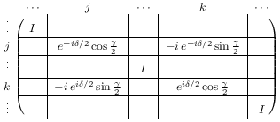
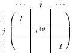

| Safe Haskell | None |
|---|
Libraries.Synthesis.RotationDecomposition
Description
This module provides functions for decomposing a unitary n×n operator into one- and two-level unitaries.
The algorithm is adapted from Section 4.5.1 of Nielsen and Chuang. In addition to what is described in Nielsen and Chuang, our algorithm produces two-level operators that can be decomposed using only two Euler angles. The algorithm produces at most n(n−1)/2 two-level operators of type Rz(δ)Rx(γ), as well as n one-level operators of type eiθ. Therefore, the decomposition of a unitary n×n operator yields n2 real parameters, which is optimal.
- data ElementaryRot a
- = ERot_zx a a Index Index
- | ERot_phase a Index
- matrix_of_elementary :: (Ring a, Floating a, Nat n) => ElementaryRot a -> Matrix n n (Cplx a)
- matrix_of_elementaries :: (Ring a, Floating a, Nat n) => [ElementaryRot a] -> Matrix n n (Cplx a)
- rotation_decomposition :: (Eq a, Fractional a, Floating a, Adjoint a, ArcTan2 a, Nat n) => Matrix n n (Cplx a) -> [ElementaryRot a]
- twolevel_matrix_of_matrix :: (Ring a, Nat n) => Matrix Two Two a -> Index -> Index -> Matrix n n a
- get_phase :: ArcTan2 a => Matrix n n (Cplx a) -> Index -> ElementaryRot a
- rowop :: (Eq a, Fractional a, Floating a, Adjoint a, ArcTan2 a, Nat n) => Matrix n n (Cplx a) -> (Index, Index) -> (Matrix n n (Cplx a), [ElementaryRot a])
- random_unitary :: (RandomGen g, Nat n, Floating a, Random a) => g -> Matrix n n (Cplx a)
- test :: IO ()
Elementary rotations
data ElementaryRot a Source
An elementary rotation is either a combined x- and z-rotation, applied at indices j and k, or a phase change applied at index j.
-
ERot_zxδ γ j k represents the operator Rz(δ)Rx(γ), applied to levels j and k.

-
ERot_phaseθ j represents the operator eiθ applied to level j.

Note: when we use a list of ElementaryRots to express a sequence of
operators, the operators are meant to be applied right-to-left,
i.e., as in the mathematical notation for matrix multiplication.
This is the opposite of the quantum circuit notation.
Constructors
| ERot_zx a a Index Index | |
| ERot_phase a Index |
Instances
| Show a => Show (ElementaryRot a) |
matrix_of_elementary :: (Ring a, Floating a, Nat n) => ElementaryRot a -> Matrix n n (Cplx a)Source
Convert a symbolic elementary rotation to a concrete matrix.
matrix_of_elementaries :: (Ring a, Floating a, Nat n) => [ElementaryRot a] -> Matrix n n (Cplx a)Source
Convert a sequence of elementary rotations to an n×n-matrix.
Decomposition into elementary rotations
rotation_decomposition :: (Eq a, Fractional a, Floating a, Adjoint a, ArcTan2 a, Nat n) => Matrix n n (Cplx a) -> [ElementaryRot a]Source
Convert an n×n-matrix to a sequence of elementary rotations.
Note: the list of elementary rotations will be returned in right-to-left order, i.e., as in the mathematical notation for matrix multiplication. This is the opposite of the quantum circuit notation.
Auxiliary functions
twolevel_matrix_of_matrix :: (Ring a, Nat n) => Matrix Two Two a -> Index -> Index -> Matrix n n aSource
Construct a two-level n×n-matrix from a given 2×2-matrix and indices j and k.
get_phase :: ArcTan2 a => Matrix n n (Cplx a) -> Index -> ElementaryRot aSource
Extract the phase of the jth diagonal entry of the given matrix.
rowop :: (Eq a, Fractional a, Floating a, Adjoint a, ArcTan2 a, Nat n) => Matrix n n (Cplx a) -> (Index, Index) -> (Matrix n n (Cplx a), [ElementaryRot a])Source
Perform a two-level operation on rows j and k of a matrix U, such that the resulting matrix has a 0 in the (j,k)-position. Return the inverse of the two-level operation used, as well as the updated matrix.